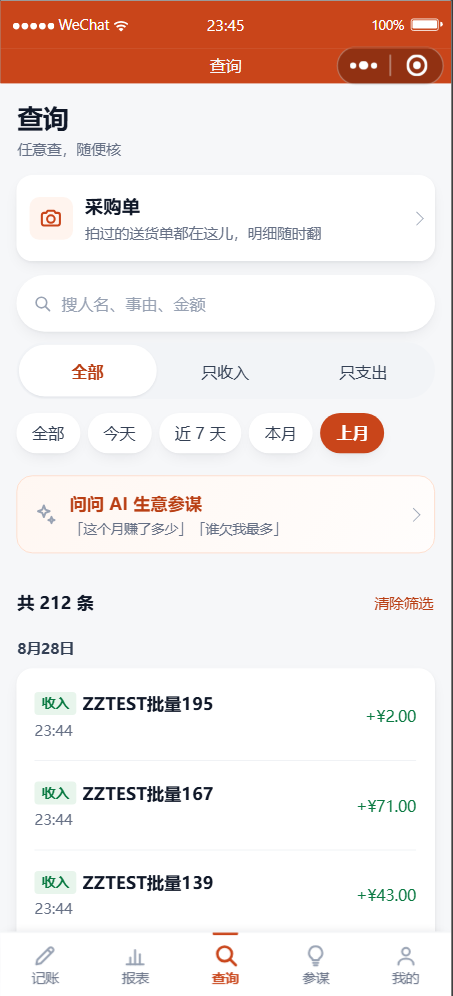

功能补充与全面审计
上月筛选 · 服务端区间查询 · 全项目审计 · 2026-09-19
一句话结论：两件事都做完了，全部检查项全绿。审计额外挖出 2 个有实际风险的问题
（其中一个是审计脚本自己会往你真实账号里写数据），已修；另有 6 条优化建议，按优先级列在最后。
一、两件功能
1. 范围筛选改成走服务端
改之前的问题：会静默给你错答案
查询页原来是把
最新 200 条拉到手机本地再筛。所以搜一个三个月前的人名，
结果是空的 ——
你会以为没这笔账，其实是它压根没被加载进来。
数据越多越明显，而且它
不报错、只给错答案。这正是最难发现的一类问题。
现在改成：每换一个条件就重新向服务器查一次，并且
能一直往下拉加载更早的记录。
筛选条件（时间范围 / 收支 / 关键词）全部由服务器执行，查到多少就是多少。
| 改了什么 | 效果 |
|---|
| 时间范围 → 服务端 | 不再受"本地只有 200 条"限制 |
| 收/支筛选 → 服务端 | 口径跟日报完全一致（只有"收入/回款"算进账） |
| 关键词 → 服务端 | 事由、往来对象名、金额都能搜；通配符已转义 |
| 上拉加载更多 | 一页 200 条，到底了会明确写「共 N 条，到底了」 |
| 下拉刷新 | 列表页的自然手势 |
| 关键词防抖 | 停止输入 0.35 秒才查，不是每敲一个字都发请求 |
| 空结果说清原因 | 「『猪』· 上月 这些条件下没有记录」而不是干巴巴一句"没有记录" |
| 「请求没通」与「真没有」分开 | 前者给重试按钮，不会让你以为账丢了 |
2. 「上月」筛选
时间范围 chips 现在是：全部 / 今天 / 近 7 天 / 本月 / 上月。
区间口径直接复用项目里已有的那套算法，不另写一份 —— 免得"页面算一套、别处算一套"。

「上月」已加上
212 条、按天分组
下方可继续上拉加载
验证是怎么做的（这步很关键）：你的账本里一条 8 月的记录都没有，
所以"上月筛选返回 0 条"证明不了任何事 —— 筛错了也是 0。
于是专门造了 8 月的账（收 1234.56 / 支 78.90）来验，才确认筛选真的对。
同理，分页那条路 9 条数据根本走不到，专门造了 210 条把分页逼出来：
200 → 212，重复 0、漏行 0。验完全部清理，你的数据一条没动。
逐项结果：全部 9 · 上月 2 · 本月 7 · 今天 7 · 只收入 4 · 只支出 5 · 搜「猪」2 · 上月+搜 2。
二、审计结果：全部检查项
| 检查项 | 结果 |
|---|
| 接口端点（37 个逐个打一遍） | 40 / 40 |
| 越权扫描（需登录的接口不带凭证必须拒绝） | 30 / 30，可未授权访问 0 个 |
| 多租户隔离（读/改/删别人的数据） | 9 / 9 |
| 前端结构 / 注册一致性 / 资源 / 语法 / JSON | 全部通过 |
| 静态自检（含跨页样式作用域） | 通过 · 其自测 9 / 9 |
| 分组汇总 / 分享 / 语音归类 / 分类统计 | 15 · 33 · 54 · 13 全过 |
| 日历日期算术 | 25 / 25 |
| 依赖安全（npm audit） | 0 漏洞 |
| 上传文件：数据库记录与磁盘是否一致 | 6 : 6，无孤立文件 |
| 小程序体积 | 516 KB（主包上限 2 MB） |
三、审计挖出的问题
已修1. 审计脚本会往你真实的账号里写数据
多租户隔离测试原来写的是「找一个 id 不是 1 的用户」来造测试数据 ——
而线上现在真的有第二个账号，就是你本人的账号。
跑一次它就会往你的账本里插 3 条测试数据（一条 ¥999.99 的假流水等），跑完才删。
中途崩了就留在那儿了，而你完全不知道这条账从哪来的。
已改成使用专用测试账号，并且即使中途出错也会收尾清理。
已修2. 线上数据库缺 7 个索引
代码里声明了 7 个索引（比如"按用户 + 日期查流水"的那个），但线上一个都没有。
原因：建表语句对已经存在的表什么都不做，而补字段的那套迁移只补了列、没补索引。
后果：每一个查询都在全表扫描。现在只有 12 条记录，你完全感觉不到；
等哪天有几万条，就是"点一下转半天"—— 而且它不报错，只是慢，
等发现的时候通常已经慢到不能用了。
已补上并逐个用 EXPLAIN 复核：5 类查询现在全部走索引，且重复执行不会重复建。
已修3. 查询页的"假筛选"
就是上面第一节那个问题 —— 本地筛 200 条。已改服务端筛选 + 分页。
建议改4. 对外暴露着一个 404 的域名
h5.dtzai.cn 指向一个不存在的目录，访问直接 404。
既然 H5 明确不做，这个配置应该摘掉（或补个占位页）。
一个 404 的域名挂在外面，被人看到会显得没做完。
建议改5. 两个没人用的接口
| 接口 | 情况 |
|---|
POST /ai/ocr-parse |
已经被更快的单据识别接口取代了，但代码还在 —— 它是要花 AI 额度的，
留着等于留了个能被误调的收费口子 |
GET /share/mine |
当时为"我分享过哪些"列表页预留的，页面一直没做 |
建议改6. 服务挂了没人知道
后端的重启次数目前是 36 次。我核对过：是今天反复部署造成的，不是崩溃循环，所以现在没问题。
但这也说明没有任何告警 —— 真哪天进程崩了、或者接口开始大面积报错，
只有等你打开小程序发现不对才会知道。
建议加一个最简单的：重启次数超阈值、或健康检查连续失败就发通知。
建议改7. 审计脚本自己也会误导人
服务端审计里打印的"表行数"用的是数据库的估算值（InnoDB 的特性），
它显示 transactions 1 行，而实际有 12 行。
审计输出本身也会骗人，应该改成真实统计。
建议改8. 查询页一页拉 200 条
一次渲染 200 行，列表长的时候首屏会有点顿。现在有上拉加载了，一页改成 50 更顺，
反正往下拉就能续。属于小优化，不做也不会出问题。
可以不做9. 一处死常量、一处用不上的兜底
单据识别里的 OCR_MODEL 常量在选型改成视觉模型后就没有再用；
月度汇总接口的本地兜底分支因为后端接口一直正常所以从没触发过。
两处都无害，只是"看着像还有用"，真想清理的话顺手就行。
四、顺带查清的一件事（挺要紧的）
线上现在有两个账号，别再搞混：
| 账号 | 是谁 | 数据 |
|---|
| 1 号 |
微信开发者工具里登录的那个微信号（测试账号） |
测试用的流水和往来对象 |
| 2 号 |
你本人手机上的账号（昵称「老易」、店名「老易的店」） |
你的真实流水 |
所以：在开发者工具里看到的账，不是你自己手机上的账。
你之前说"文件上传不成功"，在工具里看到的其实是另一个账号的数据 —— 排查问题时这点很容易把人带偏。
⚠️ 两处我之前说错了，更正一下
1. 我前面
两次说过「你的店名还没填」—— 说错了。你的店名早就填成「老易的店」了，
我看到的是测试账号（1 号）那个空的店名。
我拿错了对象下结论。
2. 你 23:33 点的那次「分享报表」我验过了，
链接完全正常：
对方打开看到的是「
老易的店 · 今日报表」，5 笔、收 ¥2,957、支 ¥51。
而我在清理测试数据时差点把这条真实的分享记录删掉 —— 是发现它的账号是 2 号才停的手。
那 7 个索引的问题也是这次审计才发现的，
它已经存在一段时间了，不是今天引入的。
五、要你拍板的
- 上面那 5 条「建议改」，要不要我一起做掉？
都是小改动，一轮就能完成（404 域名 / 死接口 / 重启告警 / 审计脚本修正 / 每页 50 条）。
- 分享功能现在还不能给外人用 —— 小程序没发布。
未发布时分享出去的卡片只有"体验版成员"能打开，你自己测试正常，发给客户打不开。
要真给别人看，得走完 ICP 备案 → 服务类目（工具→记账）→ 隐私指引 → 提交审核 → 发布。
这几件只有你能做，我这边随时可以出材料和逐条指导。